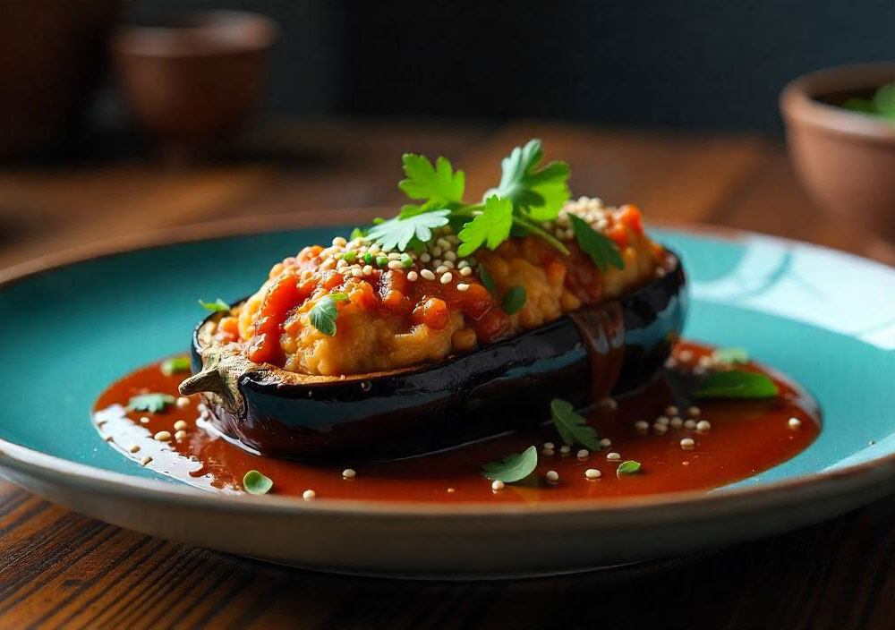
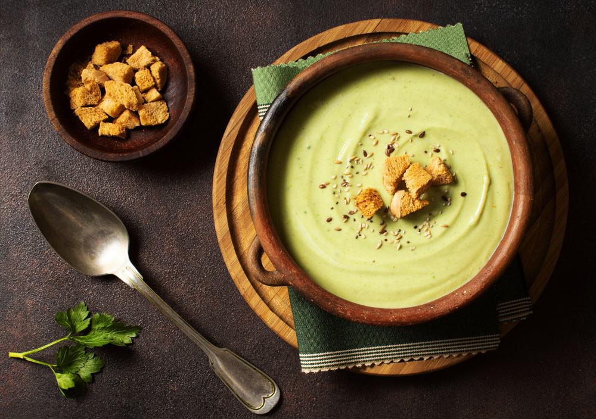
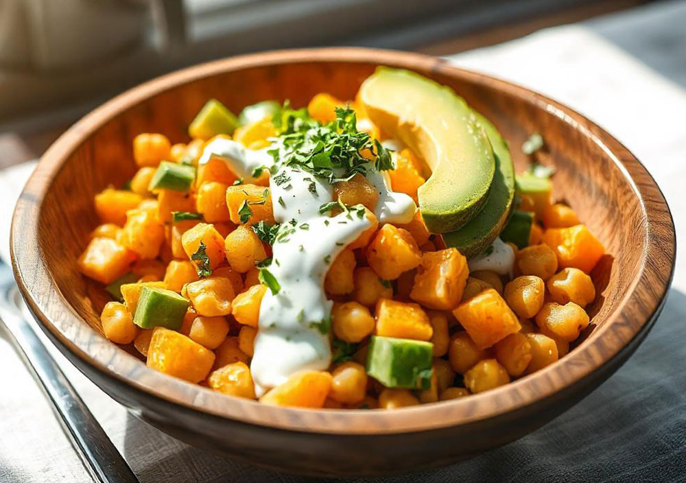

ENTRANTES

Crema antiinflamatoria
con verduras de otoño
Ver receta

Berenjena rellena
con salsa de miso, azafrán y pera
Ver receta

Gazpacho de aguacate y kéfir
con polvo de avellanas
Ver receta

Ensalada de garbanzos, naranja y aguacate con salsa de yogur
Ver receta

Marinado de tomates y campiñones
con bouquet de judías
Ver receta